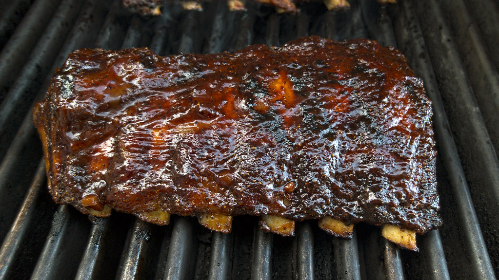

Slow Cooker Baby Back Ribs

Description
It’s a set-it-and-forget-it masterpiece: 3 lb of trimmed baby back ribs, simply seasoned with salt and pepper,
get tossed into your slow cooker with sliced onion, minced garlic, and just half a cup of water. You cook on
Low for 8 hours (or High for 4), then slather the ribs in your favorite barbecue sauce and finish them off in
the oven to get that irresistible caramelized crust that makes them truly fall-off-the-bone—and totally satisfying
every time
Ingredients
- 3 pounds of baby back ribs, trimmed
- salt and ground black pepper, to taste
- 1/2 cup water
- 1/2 onion, sliced
- 1 clove garlic, minced
- 1 (18 oz) bottle barbeque sauce
Steps
- Gather all ingredients
- Season ribs with salt and pepper
- Pour 1/2 cup water into the slow cooker, then add ribs. Scatter onion and garlic over top. Cover and cook on low for 8 hours or high for 4 hours
- When the ribs are almost finished, preheat the oven to 375 degrees F (190 degrees C)
- Transfer ribs from the slow cooker to a baking sheet; discard onion and garlic. Coat ribs with barbeque sauce.
- Bake ribs in the preheated oven until the sauce caramelizes and sticks to the meat, 10 to 15 minutes.
- Enjoy!